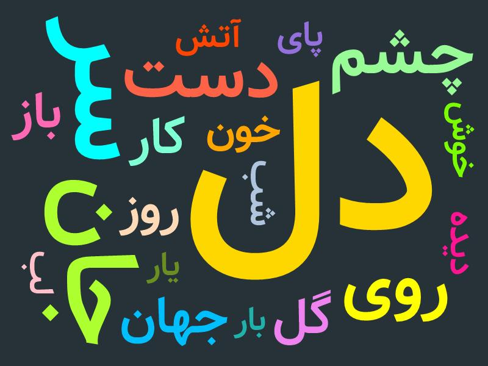
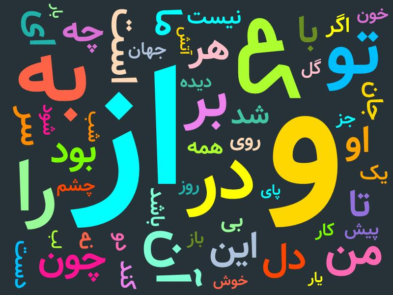

قبلاً یه بار رفتم سراغ گنجور و کل شعر فارسی رو شخم زدم (سفر به دنیای گنجور!). این بار سؤالم فرق میکرد: چه کلماتی هست که همهی شاعرها، بدون استثنا، تو شعرشون به کار بردن؟
کار خیلی سادهست. لیست تمام کلمات هر یک از شاعران رو استخراج کردم، بعد اشتراک همهی لیستها رو گرفتم. جواب میشه ۵۴ کلمه.
حالا اگر حروف ربط و اضافه، ضمایر، کلمات پرسشی و شرطی و افعال رو حذف کنیم، چیزی که باقی میمونه این میشه:

و اگر حذف نکنیم، میشه این:

این کار را اول در کانال تلگرام و توییت گذاشتم؛ این نوشته همان است، کمی کاملتر.
nb.neighbours()
| title | date | |
|---|---|---|
| prev | زیرنویس فارسی برنامهٔ شارک تنک | ۱۴۰۳/۱۱ |
| next | نقشهٔ ارتفاع ساختمانهای تهران | ۱۴۰۳/۱۲ |